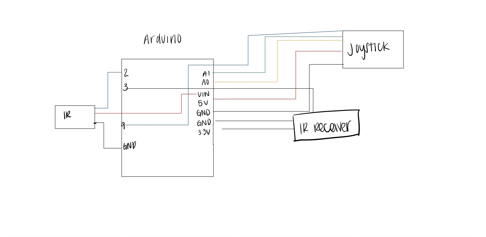
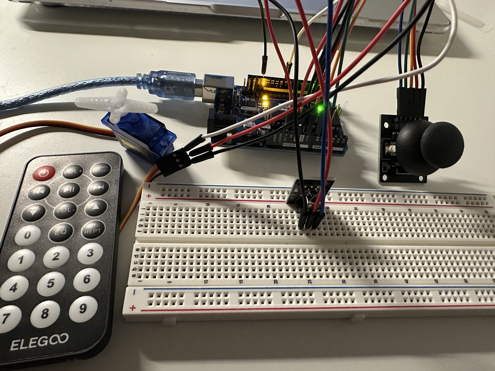
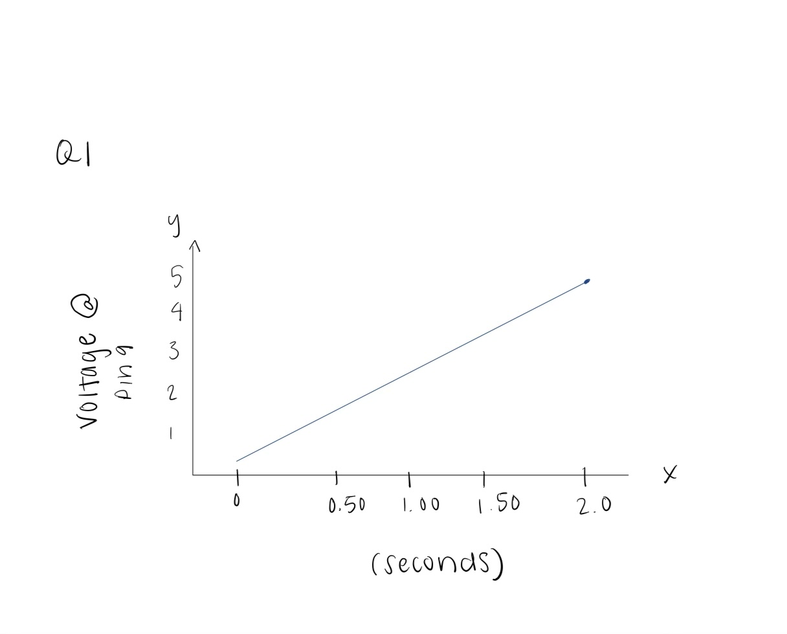

Assignment 4 Libraries!
Schematic:

Here is the schematic for my libraries. I made majority of my connections on the arduino board.
Circuit:

Code:
#include Servo.h // Servo library to control the servo motor
#include IRremote.h // IRremote library to receive IR signals
Servo myservo; // controls the servo motor
int pinX = A0; // Joystick X axis connected to pin A0
int pinY = A1; // Joystick Y axis connected to pin A1
int buttonPin = 2; // Joystick button connected to pin 2
int servoPin = 9; // Servo motor connected to pin 9
int IRPin = 3; // IR receiver module connected to pin 3
int xVal = 0; // stores the X axis joystick value
int yVal = 0; // stores the Y axis joystick value
int buttonState = 0; // stores the joystick button state
int servoPos = 90; // servo position start in the middle
IRrecv irrecv(IRPin); // IR receiver to read data from the IR remote
decode_results results; // stores the decoded IR signal results
void setup() {
pinMode(pinX, INPUT); // Set joystick X axis pin as input
pinMode(pinY, INPUT); // Set joystick Y axis pin as input
pinMode(buttonPin, INPUT_PULLUP); // internal pull-up resistor for the button pin
Serial.begin(9600); // Serial communication at 9600 baud rate
myservo.attach(servoPin); // Attach the servo motor to the pin 9
irrecv.enableIRIn(); // Starts the IR receiver module
}
void loop() {
xVal = analogRead(pinX); // Reads the Xaxis value from the joystick
yVal = analogRead(pinY); // Reads the Yaxis value from the joystick
buttonState = digitalRead(buttonPin); // Reads the button state
servoPos = map(xVal, 0, 1023, 0, 180); // Maps the joystick X value to a servo range between 0 to 180 degrees
myservo.write(servoPos); // Moves the servo to the mapped position
if (results.value == 0xF30CFF00) { // When 1 is pressed and the IR signal matches the hex code
servoPos = 0; // Move servo to 0 degree position
}
else if (results.value == 0xE718FF00) { // If 2 is pressed and the IR signal is received
servoPos = 180; // Move servo to 180 degree position
}
myservo.write(servoPos); // Moves the servo to the new position
irrecv.resume(); // Resume IR signal for the next input
}
// Prints values to the serial monitor
Serial.print("x: ");
Serial.print(xVal);
Serial.print(" y: ");
Serial.print(yVal);
Serial.print(" Button: ");
Serial.println(buttonState);
delay(100); // Short delay
Additional Questions
Q1: Draw a graph with the X axis in seconds, for two seconds, and the y-axis the voltage at pin 9 with respect to ground.

Q2:Your input device is slightly broken, leading it to give us an erroneous reading 1% of the time. How can we address this? Answer in (pseudo)code.
A2: Can address this by taking multiple readings.
// take multiple readings
// take the readings and find the sum
// Calculate the average of the reading
Q3: Your input device is slightly noisy, leading the measurement to randomly deviate from the true measurement up or down by 10%. How can we address this?
A3: Take the mulitple measurements, and take the average
// take multiple readings
// calculate the average